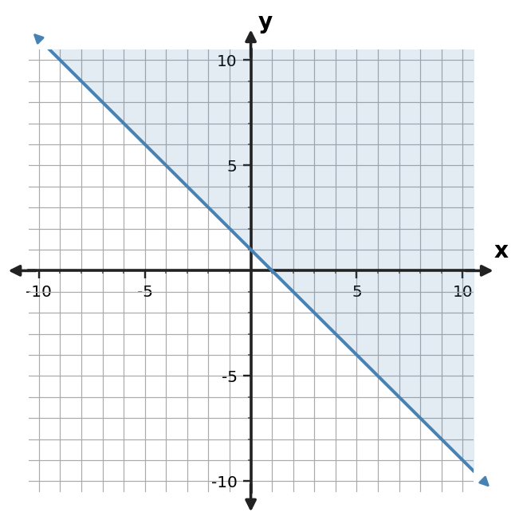
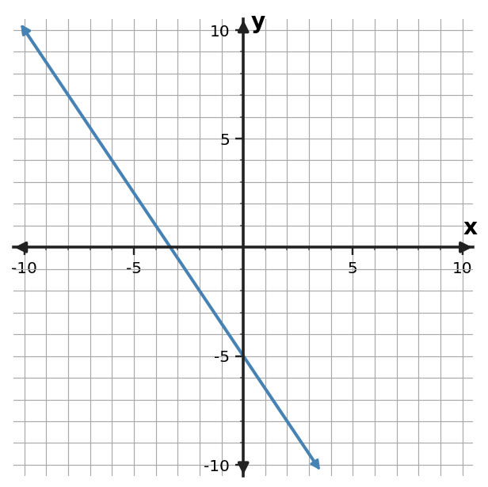

Use the graph to determine the solution of the system.

Choose a section and ticket.
| 1Use the graph to determine the solution of the system. | 2Classify the system and justify. $\begin{cases}x+2y=-4\\3x+6y=-12\end{cases}$ |
| 3Use elimination to solve $\begin{cases}2x+y=7\\-2x+3y=5\end{cases}$. State the ordered-pair solution and classify the system as having one solution, no solution, or infinitely many solutions. | 4Use the graph to determine the solution of the system. |
Use the graph to determine the solution of the system.
Classify the system and justify. $\begin{cases}x+2y=-4\\3x+6y=-12\end{cases}$
Use elimination to solve $\begin{cases}2x+y=7\\-2x+3y=5\end{cases}$. State the ordered-pair solution and classify the system as having one solution, no solution, or infinitely many solutions.
Use the graph to determine the solution of the system.
A student wants to multiply $x+3y=-3$ by $-3$ for elimination but writes $-3x+3y=-3$. Identify the mistake and write the correct equivalent equation.
Use the table to identify the ordered pair that satisfies both equations.
| x | Equation 1 y | Equation 2 y |
|---|---|---|
| -4 | 6 | -8 |
| -3 | 3 | -4 |
| -2 | 0 | 0 |
| -1 | -3 | 4 |
| 0 | -6 | 8 |
Use the table to identify the ordered pair that satisfies both equations.
| x | Equation 1 y | Equation 2 y |
|---|---|---|
| 1 | -1 | -11 |
| 2 | -3 | -8 |
| 3 | -5 | -5 |
| 4 | -7 | -2 |
| 5 | -9 | 1 |
Classify the system and justify. $\begin{cases}x-2y=-6\\2x-4y=-12\end{cases}$
Classify the system and justify. $\begin{cases}x+y=1\\3x+3y=3\end{cases}$
Use the table to identify the ordered pair that satisfies both equations.
| x | Equation 1 y | Equation 2 y |
|---|---|---|
| 2 | -5 | 0 |
| 3 | -3 | -1/2 |
| 4 | -1 | -1 |
| 5 | 1 | -3/2 |
| 6 | 3 | -2 |
Use the table to identify the ordered pair that satisfies both equations.
| x | Equation 1 y | Equation 2 y |
|---|---|---|
| 1 | 0 | -4 |
| 2 | 2 | 0 |
| 3 | 4 | 4 |
| 4 | 6 | 8 |
| 5 | 8 | 12 |
A student tries to eliminate $y$ from $2x+y=0$ and $4x-y=-6$ by subtracting the equations. Identify the error and state the efficient operation.
Use the table to identify the ordered pair that satisfies both equations.
| x | Equation 1 y | Equation 2 y |
|---|---|---|
| -4 | -6 | -8 |
| -3 | -3 | -4 |
| -2 | 0 | 0 |
| -1 | 3 | 4 |
| 0 | 6 | 8 |
A student tries to eliminate $y$ from $x+y=3$ and $2x-y=3$ by subtracting the equations. Identify the error and state the efficient operation.
Classify the system and justify. $\begin{cases}x+y=-4\\3x+3y=-12\end{cases}$
Use the table to identify the ordered pair that satisfies both equations.
| x | Equation 1 y | Equation 2 y |
|---|---|---|
| 1 | -4 | 2 |
| 2 | -2 | 1 |
| 3 | 0 | 0 |
| 4 | 2 | -1 |
| 5 | 4 | -2 |
| 1Graph $y=-3x+1$ and identify its $y$-intercept. | 2Graph $y=-x+2$ and identify its $y$-intercept. |
| 3Graph $y=-x-3$ and identify its $y$-intercept. | 4Graph $y=-4x+4$ and identify its $y$-intercept. |
Graph $y=-3x+1$ and identify its $y$-intercept.
Graph $y=-x+2$ and identify its $y$-intercept.
Graph $y=-x-3$ and identify its $y$-intercept.
Graph $y=-4x+4$ and identify its $y$-intercept.
Graph $y=1/2x-2$ and identify its $y$-intercept.
Graph $y=2x-5$ and identify its $y$-intercept.
Graph $y=3x+1$ and identify its $y$-intercept.
Graph $y=2x-3$ and identify its $y$-intercept.
Plot the ordered pairs from the table and draw the linear function through them. Then state its slope and $y$-intercept.
| $x$ | $y$ |
|---|---|
| $-2$ | $6$ |
| $0$ | $4$ |
| $2$ | $2$ |
| $4$ | $0$ |
Plot the ordered pairs from the table and draw the linear function through them. Then state its slope and $y$-intercept.
| $x$ | $y$ |
|---|---|
| $-2$ | $9$ |
| $0$ | $5$ |
| $2$ | $1$ |
| $4$ | $-3$ |
Graph $y=-x+4$ and identify its $y$-intercept.
Plot the ordered pairs from the table and draw the linear function through them. Then state its slope and $y$-intercept.
| $x$ | $y$ |
|---|---|
| $-2$ | $-4$ |
| $0$ | $-2$ |
| $2$ | $0$ |
| $4$ | $2$ |
Plot the ordered pairs from the table and draw the linear function through them. Then state its slope and $y$-intercept.
| $x$ | $y$ |
|---|---|
| $-2$ | $-11$ |
| $0$ | $-5$ |
| $2$ | $1$ |
| $4$ | $7$ |
Plot the ordered pairs from the table and draw the linear function through them. Then state its slope and $y$-intercept.
| $x$ | $y$ |
|---|---|
| $-2$ | $2$ |
| $0$ | $3$ |
| $2$ | $4$ |
| $4$ | $5$ |
Plot the ordered pairs from the table and draw the linear function through them. Then state its slope and $y$-intercept.
| $x$ | $y$ |
|---|---|
| $-2$ | $10$ |
| $0$ | $6$ |
| $2$ | $2$ |
| $4$ | $-2$ |
Plot the ordered pairs from the table and draw the linear function through them. Then state its slope and $y$-intercept.
| $x$ | $y$ |
|---|---|
| $-2$ | $-6$ |
| $0$ | $-4$ |
| $2$ | $-2$ |
| $4$ | $0$ |
1The table is one representation of a relationship. Write an equation that represents the same relationship.
| 2The table is one representation of a relationship. Write an equation that represents the same relationship.
| ||||||||||||||||
3The table is one representation of a relationship. Write an equation that represents the same relationship.
| 4A linear relationship has equation $y=-2x+5$. Complete the values for $x=0,1,2$ and explain how the table confirms the equation. |
The table is one representation of a relationship. Write an equation that represents the same relationship.
| x | y |
|---|---|
| 0 | 1 |
| 1 | 3 |
| 2 | 5 |
The table is one representation of a relationship. Write an equation that represents the same relationship.
| x | y |
|---|---|
| 0 | 2 |
| 1 | 3 |
| 2 | 4 |
The table is one representation of a relationship. Write an equation that represents the same relationship.
| x | y |
|---|---|
| 0 | -5 |
| 1 | -7 |
| 2 | -9 |
A linear relationship has equation $y=-2x+5$. Complete the values for $x=0,1,2$ and explain how the table confirms the equation.
The table is one representation of a relationship. Write an equation that represents the same relationship.
| x | y |
|---|---|
| 0 | 4 |
| 1 | 3 |
| 2 | 2 |
The table is one representation of a relationship. Write an equation that represents the same relationship.
| x | y |
|---|---|
| 0 | -2 |
| 1 | 1 |
| 2 | 4 |
| x | y |
|---|---|
| 0 | 2 |
| 1 | 5 |
| 2 | 8 |
Write the equation.
The table is one representation of a relationship. Write an equation that represents the same relationship.
| x | y |
|---|---|
| 0 | 2 |
| 1 | 0 |
| 2 | -2 |
| x | y |
|---|---|
| -1 | -4 |
| 0 | -2 |
| 1 | 0 |
| 2 | 2 |
Write an equation that represents the table.
| x | y |
|---|---|
| -1 | -2 |
| 0 | 1 |
| 1 | 4 |
| 2 | 7 |
Write an equation that represents the table.
| x | y |
|---|---|
| -1 | 1 |
| 0 | 4 |
| 1 | 7 |
| 2 | 10 |
Write an equation that represents the table.
| x | y |
|---|---|
| -1 | 6 |
| 0 | 4 |
| 1 | 2 |
| 2 | 0 |
Write an equation that represents the table.
| x | y |
|---|---|
| -1 | -5 |
| 0 | -2 |
| 1 | 1 |
| 2 | 4 |
Write an equation that represents the table.
| x | y |
|---|---|
| -1 | -1 |
| 0 | 1 |
| 1 | 3 |
| 2 | 5 |
Write an equation that represents the table.
| x | y |
|---|---|
| -1 | -1 |
| 0 | -3 |
| 1 | -5 |
| 2 | -7 |
Write an equation that represents the table.
| x | y |
|---|---|
| -1 | 3 |
| 0 | 4 |
| 1 | 5 |
| 2 | 6 |
Write an equation that represents the table.
| 1For the system $y=2x+3$ and $2x+y=-1$, identify the most efficient first substitution step before solving. | 2Which method is more efficient for $x+y=0$ and $y=-2x-1$: substitution or elimination? Explain the structural cue. |
| 3Use substitution to solve $\begin{cases}y=2x-3\\x+y=9\end{cases}$. State the ordered-pair solution and explain what the ordered pair means for the two equations. | 4Check whether $(1,-4)$ satisfies both $y=-3x-1$ and $x+y=-2$. |
For the system $y=2x+3$ and $2x+y=-1$, identify the most efficient first substitution step before solving.
Which method is more efficient for $x+y=0$ and $y=-2x-1$: substitution or elimination? Explain the structural cue.
Use substitution to solve $\begin{cases}y=2x-3\\x+y=9\end{cases}$. State the ordered-pair solution and explain what the ordered pair means for the two equations.
Check whether $(1,-4)$ satisfies both $y=-3x-1$ and $x+y=-2$.
A student substitutes $3x+3$ for $y$ in $2x+2y=6$ but writes $2x+2(3x)+3=6$. Identify and correct the substitution error.
For the system $y=x+2$ and $2x+y=-7$, identify the most efficient first substitution step before solving.
Check whether $(-1,3)$ satisfies both $y=x+4$ and $x+y=2$.
Which method is more efficient for $x+y=5$ and $y=2x-1$: substitution or elimination? Explain the structural cue.
Which method is more efficient for $2x+2y=2$ and $-2x+3y=-17$: substitution or elimination? Explain the structural cue.
Check whether $(-2,5)$ satisfies both $y=x+7$ and $x+y=3$.
For the system $y=x+8$ and $2x+y=-4$, identify the most efficient first substitution step before solving.
A student substitutes $x+5$ for $y$ in $2x+3y=0$ but writes $2x+3(x)+5=0$. Identify and correct the substitution error.
Check whether $(-2,-3)$ satisfies both $y=-2x-7$ and $x+y=-5$.
A student substitutes $-x-2$ for $y$ in $2x-2y=16$ but writes $2x-2(-x)-2=16$. Identify and correct the substitution error.
Which method is more efficient for $x+2y=9$ and $3x-2y=5$: substitution or elimination? Explain the structural cue.
For the system $y=-x+4$ and $3x+y=12$, identify the most efficient first substitution step before solving.
1Write a linear equation for the table.
| 2Write a linear equation for the table.
| ||||||||||||||||
3Write a linear equation for the table.
| 4Write a linear equation for the table.
|
Write a linear equation for the table.
| x | y |
|---|---|
| 0 | 6 |
| 1 | 2 |
| 2 | -2 |
Write a linear equation for the table.
| x | y |
|---|---|
| 0 | -6 |
| 1 | -5 |
| 2 | -4 |
Write a linear equation for the table.
| x | y |
|---|---|
| 0 | 4 |
| 1 | 8 |
| 2 | 12 |
Write a linear equation for the table.
| x | y |
|---|---|
| 0 | -5 |
| 1 | -6 |
| 2 | -7 |
Write a linear equation for the table.
| x | y |
|---|---|
| 0 | 4 |
| 1 | 7 |
| 2 | 10 |
Write a linear equation for the table.
| x | y |
|---|---|
| 0 | 1 |
| 1 | 3 |
| 2 | 5 |
Write a linear equation for the table.
| x | y |
|---|---|
| 0 | 2 |
| 1 | 5/2 |
| 2 | 3 |
Write a linear equation for the table.
| x | y |
|---|---|
| 0 | -1 |
| 1 | 0 |
| 2 | 1 |
Write an equation in slope-intercept form for the relationship in the table.
| $x$ | $y$ |
|---|---|
| $-2$ | $-2$ |
| $0$ | $-8$ |
| $2$ | $-14$ |
| $4$ | $-20$ |
Write an equation in slope-intercept form for the relationship in the table.
| $x$ | $y$ |
|---|---|
| $-2$ | $9$ |
| $0$ | $1$ |
| $2$ | $-7$ |
| $4$ | $-15$ |
Write a linear equation for the table.
| x | y |
|---|---|
| 0 | -3 |
| 1 | -4 |
| 2 | -5 |
Write an equation in slope-intercept form for the relationship in the table.
| $x$ | $y$ |
|---|---|
| $-2$ | $-2$ |
| $0$ | $-1$ |
| $2$ | $0$ |
| $4$ | $1$ |
Write an equation in slope-intercept form for the relationship in the table.
| $x$ | $y$ |
|---|---|
| $-2$ | $-11$ |
| $0$ | $-3$ |
| $2$ | $5$ |
| $4$ | $13$ |
Write an equation in slope-intercept form for the relationship in the table.
| $x$ | $y$ |
|---|---|
| $-2$ | $-4$ |
| $0$ | $-6$ |
| $2$ | $-8$ |
| $4$ | $-10$ |
Write an equation in slope-intercept form for the relationship in the table.
| $x$ | $y$ |
|---|---|
| $-2$ | $-9$ |
| $0$ | $-5$ |
| $2$ | $-1$ |
| $4$ | $3$ |
Write an equation in slope-intercept form for the relationship in the table.
| $x$ | $y$ |
|---|---|
| $-2$ | $-3$ |
| $0$ | $1$ |
| $2$ | $5$ |
| $4$ | $9$ |
| 1Rewrite $2(x+3)+5$ in an equivalent expanded form. | 2Rewrite $6(x-2)-5$ in an equivalent expanded form. |
| 3Rewrite $5(x+4)+7$ in an equivalent expanded form. | 4Rewrite $5(x-2)+3$ in an equivalent expanded form. |
Rewrite $2(x+3)+5$ in an equivalent expanded form.
Rewrite $6(x-2)-5$ in an equivalent expanded form.
Rewrite $5(x+4)+7$ in an equivalent expanded form.
Rewrite $5(x-2)+3$ in an equivalent expanded form.
Rewrite $4(x+3)+7$ in an equivalent expanded form.
Rewrite $6(x+5)-5$ in an equivalent expanded form.
Solve the system by substitution. $\begin{cases}y=3x+16\\3x+y=-8\end{cases}$
Rewrite $3(x+3)-2$ in an equivalent expanded form.
Solve $5x-4=21$.
Solve $4x+5=21$.
Solve the system by substitution. $\begin{cases}y=2x+9\\2x+y=-3\end{cases}$
Solve $5x-4=11$.
Solve $5x-4=16$.
Solve $3x-2=13$.
Solve $2x+3=11$.
Solve $3x-2=7$.
| 1Using $x$ for team shirts and $y$ for caps, solve $x+y=16$ and $14x+6y=176$. Interpret both coordinates in context. | 2A school store sold 30 items: $x$ notebooks at 4 dollars each and $y$ pens at 2 dollars each, for 90 dollars total. The situation is modeled by $x+y=30$ and $4x+2y=90$. Before solving, state what an ordered-pair solution $(x,y)$ would mean in this context. | ||||||||
3The table lists combinations of adult tickets and student tickets that meet one total-item constraint. Describe the relationship and write the count equation.
| 4A group sells premium seats for 16 dollars each and standard seats for 10 dollars each. It sold 15 items for 186 dollars total. A candidate solution is $(6,9)$. What checks confirm that this solution is reasonable in context? |
Using $x$ for team shirts and $y$ for caps, solve $x+y=16$ and $14x+6y=176$. Interpret both coordinates in context.
A school store sold 30 items: $x$ notebooks at 4 dollars each and $y$ pens at 2 dollars each, for 90 dollars total. The situation is modeled by $x+y=30$ and $4x+2y=90$. Before solving, state what an ordered-pair solution $(x,y)$ would mean in this context.
The table lists combinations of adult tickets and student tickets that meet one total-item constraint. Describe the relationship and write the count equation.
| x = adult tickets | y = student tickets |
|---|---|
| 0 | 29 |
| 7 | 22 |
| 14 | 15 |
A group sells premium seats for 16 dollars each and standard seats for 10 dollars each. It sold 15 items for 186 dollars total. A candidate solution is $(6,9)$. What checks confirm that this solution is reasonable in context?
The table lists combinations of museum tickets and student tickets that meet the total-item constraint. Describe the relationship and write the count equation.
| x = museum tickets | y = student tickets |
|---|---|
| 0 | 22 |
| 5 | 17 |
| 11 | 11 |
Using $x$ for team shirts and $y$ for caps, solve $x+y=24$ and $14x+6y=224$. Interpret both coordinates in context.
A group sells premium passes for 12 dollars each and regular passes for 7 dollars each. It sold 20 items for 180 dollars total. A candidate solution is $(8,12)$. What checks confirm that this solution is reasonable in context?
For the system $x+y=25$ and $5x+2y=80$ modeling notebooks and pens, predict what each coordinate of an ordered-pair solution means before solving.
Before solving $x+y=22$ and $5x+2y=80$ for notebooks and pens, explain what each coordinate of the ordered-pair solution will represent.
A group sells notebooks for 5 dollars each and pens for 2 dollars each. It sold 22 items for 80 dollars total. A candidate solution is $(12,10)$. What checks confirm that this solution is reasonable in context?
Using $x$ for team shirts and $y$ for caps, solve $x+y=18$ and $14x+6y=164$. Interpret both coordinates in context.
The table lists combinations of notebooks and pens that meet one total-item constraint. Describe the relationship and write the count equation.
| x = notebooks | y = pens |
|---|---|
| 0 | 19 |
| 4 | 15 |
| 9 | 10 |
A group sells museum tickets for 15 dollars each and student tickets for 9 dollars each. It sold 16 items for 186 dollars total. A candidate solution is $(7,9)$. What checks confirm that this solution is reasonable in context?
The table lists combinations of team shirts and caps that meet one total-item constraint. Describe the relationship and write the count equation.
| x = team shirts | y = caps |
|---|---|
| 0 | 27 |
| 6 | 21 |
| 13 | 14 |
For the system $x+y=22$ and $8x+5y=137$ modeling adult tickets and student tickets, predict what each coordinate of an ordered-pair solution means before solving.
Using $x$ for team shirts and $y$ for caps, solve $x+y=18$ and $14x+6y=196$. Interpret both coordinates in context.
| 1A water tank begins with 14 liters and fills at 4 liters per minute. Write a linear model for the amount $A$ after $t$ minutes and interpret the rate. | 2A water tank begins with 5 liters and fills at 7 liters per minute. Write a linear model for the amount $A$ after $t$ minutes and interpret the rate. |
| 3A water tank begins with 18 liters and fills at 4 liters per minute. Write a linear model for the amount $A$ after $t$ minutes and interpret the rate. | 4A water tank begins with 9 liters and fills at 4 liters per minute. Write a linear model for the amount $A$ after $t$ minutes and interpret the rate. |
A water tank begins with 14 liters and fills at 4 liters per minute. Write a linear model for the amount $A$ after $t$ minutes and interpret the rate.
A water tank begins with 5 liters and fills at 7 liters per minute. Write a linear model for the amount $A$ after $t$ minutes and interpret the rate.
A water tank begins with 18 liters and fills at 4 liters per minute. Write a linear model for the amount $A$ after $t$ minutes and interpret the rate.
A water tank begins with 9 liters and fills at 4 liters per minute. Write a linear model for the amount $A$ after $t$ minutes and interpret the rate.
A water tank begins with 5 liters and fills at 2 liters per minute. Write a linear model for the amount $A$ after $t$ minutes and interpret the rate.
A water tank begins with 8 liters and fills at 3 liters per minute. Write a linear model for the amount $A$ after $t$ minutes and interpret the rate.
A water tank begins with 10 liters and fills at 4 liters per minute. Write a linear model for the amount $A$ after $t$ minutes and interpret the rate.
A water tank begins with 12 liters and fills at 6 liters per minute. Write a linear model for the amount $A$ after $t$ minutes and interpret the rate.
Tank A starts with 90 liters and drains 4 liters per minute. Tank B starts with 60 liters and drains 2 liters per minute. Compare the rates and starting values. Which feature answers “changes faster,” and which answers “starts larger”?
Using $x$ for adult tickets and $y$ for student tickets, solve $x+y=13$ and $9x+6y=102$. Interpret both coordinates in context.
A water tank begins with 12 liters and fills at 5 liters per minute. Write a linear model for the amount $A$ after $t$ minutes and interpret the rate.
Tank A starts with 100 liters and drains 6 liters/min. Tank B starts with 70 liters and drains 3 liters/min. Compare the rates and starting values. Which feature answers “changes faster,” and which answers “starts larger”?
Plan A starts at 29 dollars and gains 5 dollars per week. Plan B starts at 64 dollars and gains 6 dollars per week. Compare the rates and starting values. Which feature answers “changes faster,” and which answers “starts larger”?
Plant A starts at 7 cm and grows 3 cm per week. Plant B starts at 12 cm and grows 2 cm per week. Compare rates and starting values.
Runner A begins 2 miles from a checkpoint and moves 6 miles per hour. Runner B begins 8 miles from the checkpoint and moves 4 miles per hour. Compare rates and starting values.
Using $x$ for team shirts and $y$ for caps, solve $x+y=16$ and $14x+6y=184$. Interpret both coordinates in context.
| 1A club pays a fixed fee of 5 dollars plus 3 dollars per participant. The total is 26 dollars. Write and solve an equation for the number of participants. | 2A club pays a fixed fee of 12 dollars plus 7 dollars per participant. The total is 75 dollars. Write and solve an equation for the number of participants. |
| 3A club pays a fixed fee of 12 dollars plus 3 dollars per participant. The total is 33 dollars. Write and solve an equation for the number of participants. | 4A service charges a 7-dollar fixed fee plus 4 dollars per hour. The total charge is 31 dollars. Write and solve an equation for the number of hours. |
A club pays a fixed fee of 5 dollars plus 3 dollars per participant. The total is 26 dollars. Write and solve an equation for the number of participants.
A club pays a fixed fee of 12 dollars plus 7 dollars per participant. The total is 75 dollars. Write and solve an equation for the number of participants.
A club pays a fixed fee of 12 dollars plus 3 dollars per participant. The total is 33 dollars. Write and solve an equation for the number of participants.
A service charges a 7-dollar fixed fee plus 4 dollars per hour. The total charge is 31 dollars. Write and solve an equation for the number of hours.
A club pays a fixed fee of 8 dollars plus 4 dollars per participant. The total is 32 dollars. Write and solve an equation for the number of participants.
A club pays a fixed fee of 7 dollars plus 7 dollars per participant. The total is 35 dollars. Write and solve an equation for the number of participants.
Solve $3x+4=25$.
A club pays a fixed fee of 6 dollars plus 5 dollars per participant. The total is 41 dollars. Write and solve an equation for the number of participants.
Solve $4x+5=13$.
Solve $4x+3=31$.
Solve $2x+3=11$.
Solve $-2x+9=-5$.
Solve $2x+3=9$.
Solve $3x-2=7$.
Solve $5x-4=11$.
Solve $5x-4=21$.
1A student claims the shaded graph represents $y\gt-3x+1$. Critique the claim. State the correct inequality and identify the boundary or shading evidence that decides. | 2Construct the graph of $y \le 2x+2$ with the correct boundary style and shaded half-plane. |
3A student claims the shaded graph represents $y\lt-2x-2$. Critique the claim. State the correct inequality and identify the graph feature that changes the symbol. | 4For $y\lt-2x+3$, use the test point $(0,0)$ to decide which side of the boundary should be shaded. Show the substitution and state whether the half-plane containing $(0,0)$ is part of the solution. |
A student claims the shaded graph represents $y>-3x+1$. Critique the claim. State the correct inequality and identify the boundary or shading evidence that decides.
Construct the graph of $y \le 2x+2$ with the correct boundary style and shaded half-plane.
A student claims the shaded graph represents $y<-2x-2$. Critique the claim. State the correct inequality and identify the graph feature that changes the symbol.
For $y<-2x+3$, use the test point $(0,0)$ to decide which side of the boundary should be shaded. Show the substitution and state whether the half-plane containing $(0,0)$ is part of the solution.
A student graphs $y \lt x+2$ with a solid boundary and shades below. Identify the error.
Write an inequality represented by the shaded graph. Include the correct inequality symbol.

A student graphs $y \ge -3x+3$ with a solid boundary and shades below. Critique the graph and state the needed correction.
Construct the graph of $y \le -3x$ with the correct boundary style and shaded half-plane.
Construct the graph of $y \le -3x+2$ with the correct boundary style and shaded half-plane.
A student graphs $y \ge -2x$ with a solid boundary and shades below. Critique the graph and state the needed correction.
A student graphs $y \ge -2x-3$ with a solid boundary and shades below. Critique the graph and state the needed correction.
A student graphs $y \le -x+4$ with a dashed boundary and shades below. Identify the error.
A student graphs $y \lt -x-2$ with a solid boundary and shades below. Critique the graph and state the needed correction.
A student graphs $y \ge -2x+3$ with a dashed boundary and shades above. Identify the error.
Construct the graph of $y \le -3x-4$ with the correct boundary style and shaded half-plane.
A student graphs $y \ge x$ with a solid boundary and shades below. Critique the graph and state the needed correction.
| 1A line falls 7 units when $x$ increases 3 units. Determine its slope. | 2A line rises 2 units when $x$ increases 3 units. Determine its slope. |
| 3A line rises 6 units when $x$ increases 1 units. Determine its slope. | 4A line falls 4 units when $x$ increases 4 units. Determine its slope. |
A line falls 7 units when $x$ increases 3 units. Determine its slope.
A line rises 2 units when $x$ increases 3 units. Determine its slope.
A line rises 6 units when $x$ increases 1 units. Determine its slope.
A line falls 4 units when $x$ increases 4 units. Determine its slope.
A line rises 2 units when $x$ increases 1 unit. Determine its slope.
A line rises 2 units when $x$ increases 4 units. Determine its slope.
A line falls 3 units when $x$ increases 2 units. Determine its slope.
A line rises 4 units when $x$ increases 2 units. Determine its slope.
Write a linear equation in slope-intercept form for the line through $(0,1)$ and $(2,9)$.
Write a linear equation in slope-intercept form for the line through $(-2,-5)$ and $(4,-2)$.
A line rises 1 unit when $x$ increases 3 units. Determine its slope.
Write a linear equation in slope-intercept form for the line through $(1,-5)$ and $(5,-13)$.
Write a linear equation in slope-intercept form for the line through $(1,-3)$ and $(4,-6)$.
Write a linear equation in slope-intercept form for the line through $(-4,6)$ and $(2,0)$.
Write a linear equation in slope-intercept form for the line through $(-3,-1)$ and $(3,2)$.
Write a linear equation in slope-intercept form for the line through $(-1,-1)$ and $(2,-7)$.
1Classify the relationship as linear or exponential and cite evidence from the table.
| 2Classify the relationship as linear or exponential and cite evidence from the table.
| ||||||||||||||||||||
| 3Classify the relationship as linear or exponential and cite evidence from the table. $x: 0,1,2,3$; $y: 5,10,20,40$. | 4Classify the relationship as linear or exponential and cite evidence from the table. $x: 0,1,2,3$; $y: -2,2,6,10$. |
Classify the relationship as linear or exponential and cite evidence from the table.
| x | y |
|---|---|
| 0 | 3 |
| 1 | 9 |
| 2 | 27 |
| 3 | 81 |
Classify the relationship as linear or exponential and cite evidence from the table.
| x | y |
|---|---|
| 0 | 0 |
| 1 | -3 |
| 2 | -6 |
| 3 | -9 |
Classify the relationship as linear or exponential and cite evidence from the table. $x: 0,1,2,3$; $y: 5,10,20,40$.
Classify the relationship as linear or exponential and cite evidence from the table. $x: 0,1,2,3$; $y: -2,2,6,10$.
Classify the relationship as linear or exponential and cite evidence from the table.
| x | y |
|---|---|
| 0 | 2 |
| 1 | 4 |
| 2 | 8 |
| 3 | 16 |
Classify the relationship as linear or exponential and cite evidence from the table.
| x | y |
|---|---|
| 0 | 1 |
| 1 | 4 |
| 2 | 7 |
| 3 | 10 |
| x | y |
|---|---|
| 0 | 2 |
| 1 | 6 |
| 2 | 18 |
Classify the family and cite evidence.
Classify the relationship as linear or exponential and cite evidence from the table.
| x | y |
|---|---|
| 0 | 1 |
| 1 | 2 |
| 2 | 4 |
| 3 | 8 |
| x | y |
|---|---|
| 0 | 3 |
| 1 | 9 |
| 2 | 27 |
| 3 | 81 |
Classify the function family and cite evidence from the pattern.
| x | y |
|---|---|
| 0 | 1 |
| 1 | 5 |
| 2 | 9 |
| 3 | 13 |
Classify the function family and cite evidence from the pattern.
| x | y |
|---|---|
| 0 | 1 |
| 1 | 2 |
| 2 | 5 |
| 3 | 10 |
Classify the function family and cite evidence from the pattern.
| x | y |
|---|---|
| -2 | 2 |
| -1 | 1 |
| 0 | 0 |
| 1 | 1 |
| 2 | 2 |
Classify the function family and cite evidence from the pattern.
| x | y |
|---|---|
| 0 | 1 |
| 1 | 2 |
| 2 | 3 |
| 3 | 4 |
Classify the function family and cite evidence from the pattern.
| x | y |
|---|---|
| -2 | 4 |
| -1 | 3 |
| 0 | 2 |
| 1 | 3 |
| 2 | 4 |
Classify the function family and cite evidence from the pattern.
| x | y |
|---|---|
| 0 | 3 |
| 1 | 6 |
| 2 | 12 |
| 3 | 24 |
Classify the function family and cite evidence from the pattern.
| x | y |
|---|---|
| 0 | 2 |
| 1 | 3 |
| 2 | 6 |
| 3 | 11 |
Classify the function family and cite evidence from the pattern.
1Use the graph to describe the feasible region of the system. Give one point that appears feasible. | 2Use the graph to describe the feasible region of the system. Give one point that appears feasible. |
| 3A group has a limit of 19 total items split between museum tickets and student tickets, and it needs at least 9 student tickets. Let $x$ be the number of museum tickets and $y$ the number of student tickets. Write a system of inequalities, including nonnegativity. | 4The point $(2,8)$ satisfies $y\ge -x+4$ but does not satisfy $y\le x+5$. Can it belong to the feasible region of the system? Explain using the meaning of overlap. |
Use the graph to describe the feasible region of the system. Give one point that appears feasible.
Use the graph to describe the feasible region of the system. Give one point that appears feasible.
A group has a limit of 19 total items split between museum tickets and student tickets, and it needs at least 9 student tickets. Let $x$ be the number of museum tickets and $y$ the number of student tickets. Write a system of inequalities, including nonnegativity.
The point $(2,8)$ satisfies $y\ge -x+4$ but does not satisfy $y\le x+5$. Can it belong to the feasible region of the system? Explain using the meaning of overlap.
A group has a limit of 30 total items split between museum tickets and student tickets, and it needs at least 5 student tickets. Let $x$ be the number of museum tickets and $y$ the number of student tickets. Write a system of inequalities, including nonnegativity.
Compare the two linear relationships in the table. Which has the greater rate of change, and where do their outputs match?
| x | A | B |
|---|---|---|
| 0 | -3 | 7 |
| 1 | 1 | 6 |
| 2 | 5 | 5 |
| 3 | 9 | 4 |
The point $(3,11)$ satisfies $y\ge -x+5$ but does not satisfy $y\le x+7$. Can it belong to the feasible region of the system? Explain using the meaning of overlap.
Compare the two linear relationships in the table. Which has the greater rate of change, and where do their outputs match?
| x | A | B |
|---|---|---|
| 1 | 5 | 11 |
| 2 | 8 | 11 |
| 3 | 11 | 11 |
| 4 | 14 | 11 |
Compare the two linear relationships in the table. Which has the greater rate of change, and where do their outputs match?
| x | A | B |
|---|---|---|
| 0 | -1 | 5 |
| 1 | 1 | 4 |
| 2 | 3 | 3 |
| 3 | 5 | 2 |
The point $(4,11)$ satisfies $y\ge -x+3$ but does not satisfy $y\le x+6$. Can it belong to the feasible region of the system? Explain using the meaning of overlap.
Compare the two linear relationships in the table. Which has the greater rate of change, and where do their outputs match?
| x | A | B |
|---|---|---|
| 0 | 2 | 8 |
| 1 | 5 | 7 |
| 2 | 8 | 6 |
| 3 | 11 | 5 |
A group has a limit of 22 total items split between adult tickets and student tickets, and it needs at least 9 student tickets. Let $x$ be the number of adult tickets and $y$ the number of student tickets. Write a system of inequalities, including nonnegativity.
The point $(1,6)$ satisfies $y\ge -x+5$ but does not satisfy $y\le x+4$. Can it belong to the feasible region of the system? Explain using the meaning of overlap.
A group has a limit of 28 total items split between notebooks and pens, and it needs at least 5 pens. Let $x$ be the number of notebooks and $y$ the number of pens. Write a system of inequalities, including nonnegativity.
The point $(5,12)$ satisfies $y\ge -x+5$ but does not satisfy $y\le x+6$. Can it belong to the feasible region of the system? Explain using the meaning of overlap.
Compare the two linear relationships in the table. Which has the greater rate of change, and where do their outputs match?
| x | A | B |
|---|---|---|
| 0 | 1 | 4 |
| 1 | 3 | 5 |
| 2 | 5 | 6 |
| 3 | 7 | 7 |
1Compare the two linear relationships in the table. Which has the greater rate of change, and where do their outputs match?
| 2The table shows two linear relationships. Compare their rates of change and determine whether they ever have the same output for the listed inputs.
| |||||||||||||||||||||||||||
| 3Relationship A is $y=3x-2$ and relationship B is $y=x+4$. Which has the greater rate of change, and at what input do their outputs match? | 4The table shows A increasing by 1 each step and B increasing by 3 each step. Use the values to compare the relationships and identify the matching output.
|
Compare the two linear relationships in the table. Which has the greater rate of change, and where do their outputs match?
| x | A | B |
|---|---|---|
| 0 | 0 | 4 |
| 1 | 4 | 4 |
| 2 | 8 | 4 |
The table shows two linear relationships. Compare their rates of change and determine whether they ever have the same output for the listed inputs.
| x | A | B |
|---|---|---|
| 0 | 0 | 6 |
| 1 | 2 | 5 |
| 2 | 4 | 4 |
| 3 | 6 | 3 |
Relationship A is $y=3x-2$ and relationship B is $y=x+4$. Which has the greater rate of change, and at what input do their outputs match?
The table shows A increasing by 1 each step and B increasing by 3 each step. Use the values to compare the relationships and identify the matching output.
| x | A | B |
|---|---|---|
| 0 | 5 | -1 |
| 1 | 6 | 2 |
| 2 | 7 | 5 |
| 3 | 8 | 8 |
Compare the two linear relationships in the table. Which has the greater rate of change, and where do their outputs match?
| x | A | B |
|---|---|---|
| 0 | -1 | 5 |
| 1 | 1 | 4 |
| 2 | 3 | 3 |
| 3 | 5 | 2 |
Compare the two linear relationships in the table. Which has the greater rate of change, and where do their outputs match?
| x | A | B |
|---|---|---|
| 0 | -3 | 7 |
| 1 | 1 | 6 |
| 2 | 5 | 5 |
| 3 | 9 | 4 |
Compare the two linear relationships in the table. Which has the greater rate of change, and where do their outputs match?
| x | A | B |
|---|---|---|
| 0 | 2 | 8 |
| 1 | 5 | 7 |
| 2 | 8 | 6 |
| 3 | 11 | 5 |
Compare the two linear relationships in the table. Which has the greater rate of change, and where do their outputs match?
| x | A | B |
|---|---|---|
| 1 | 5 | 11 |
| 2 | 8 | 11 |
| 3 | 11 | 11 |
| 4 | 14 | 11 |
Relationship A is $y=3x-7$. Relationship B is shown in the table. Compare their rates of change and starting values.
| $x$ | $B: y$ |
|---|---|
| $0$ | $4$ |
| $2$ | $12$ |
| $4$ | $20$ |
A tank begins with 90 liters and drains 6 liters each minute. Sketch a graph with minutes on the horizontal axis and liters remaining on the vertical axis. Identify what the intercept means.
Compare the two linear relationships in the table. Which has the greater rate of change, and where do their outputs match?
| x | A | B |
|---|---|---|
| 0 | 1 | 4 |
| 1 | 3 | 5 |
| 2 | 5 | 6 |
| 3 | 7 | 7 |
The graphed line is Relationship A. Relationship C is $y=2x+1$. Which has the greater rate of change? Compare their starting values as well.

A tank starts with 84 liters and drains 7 liters each minute. Sketch a graph with minutes on the horizontal axis and liters remaining on the vertical axis. Identify what the intercept means.
The graphed line is Relationship A. Relationship C is $y=\frac{1}{2}x+4$. Which has the greater rate of change? Compare their starting values as well.

Relationship A is $y=3x-2$. Relationship B is shown in the table. Compare their rates of change and starting values.
| $x$ | B: $y$ |
|---|---|
| $0$ | $3$ |
| $2$ | $5$ |
| $4$ | $7$ |
The graphed line is Relationship A. Relationship C is $y=-x+3$. Which has the greater rate of change? Compare their starting values as well.

| 1A relation pairs input $1$ with output $7$ and also pairs the same input $1$ with output $9$. Explain whether the relation can be a function and why. | 2A relation contains $(0,3)$, $(1,5)$, $(2,7)$, and $(3,9)$. Explain why it is a function. |
| 3A relation contains $(2,4)$, $(3,6)$, $(2,8)$, and $(5,10)$. Explain why it is not a function. | 4The rule $y=3x-1$ assigns outputs to inputs. Explain why this rule defines a function and give the output when $x=4$. |
A relation pairs input $1$ with output $7$ and also pairs the same input $1$ with output $9$. Explain whether the relation can be a function and why.
A relation contains $(0,3)$, $(1,5)$, $(2,7)$, and $(3,9)$. Explain why it is a function.
A relation contains $(2,4)$, $(3,6)$, $(2,8)$, and $(5,10)$. Explain why it is not a function.
The rule $y=3x-1$ assigns outputs to inputs. Explain why this rule defines a function and give the output when $x=4$.
A rule assigns each input exactly one output. Explain why this condition matters when deciding whether a relationship is a function.
A relation pairs input $3$ with output $5$ and also pairs the same input $3$ with output $8$. Explain whether the relation can be a function and why.
The rule is $y=-2x-4$. Find the input when the output is 0.
A relation contains $(1,4)$, $(2,6)$, $(1,7)$, and $(3,8)$. Is it a function? Explain using the input-output rule.
The rule is $y=4x+5$. Find the input when the output is 17.
The rule is $y=-2x+1$. Find the input when the output is -7.
The rule is $y=3x+1$. Find the input when the output is 13.
The rule is $y=2x+2$. Find the input when the output is 12.
The rule is $y=4x+1$. Find the input when the output is 17.
The rule is $y=2x+5$. Find the input when the output is 11.
The rule is $y=3x+2$. Find the input when the output is 17.
The rule is $y=4x-4$. Find the input when the output is -12.